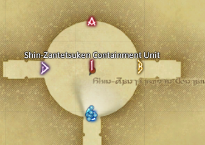

Raiden
- Setup markers at Raiden.
- Ready check.
- Kill Raiden.

Explanations
- About 40 seconds into the fight, Raiden will do a big point blank AOE called Ame-no-sakahoko.
- When he does this we go to max casting range towards the C marker.
- Raiden will do a backflip towards us and then do a donut attack.
- And we need to go all the way into his hitbox to avoid it.
- After this Raiden will disappear and reappear on either B or D.
- We will go to the 1 marker in the middle, and turn to face the side that Raiden has appeared on.
- Raiden will swing his sword around and point it towards one side of the arena.
- After a bit Raiden will cleave the half of the arena he is pointing his sword towards.
- So we need to move to the opposite side, but before we do, we need to bait some puddles on the 1 marker.
- As soon as the puddles have spawned we run out of them towards the safe side.
- An easy way to do it is to just wait for the puddles to spawn, and then run towards Raiden.
- After you have moved out of the puddles, you have plenty of time to move to the safe side of the arena.
- There are more mechanics in the fight, but Raiden is usually dead before we see them.
Timeline
RaidwideTankbuster- Electrify edges
- Ame-no-sakahoko
- Whirling Zantetsuken
- Puddles
- Cleave
Raidwide- Lancing Bolts
- Loop
Raidwide- Booming Lament
- Exaflares
- Bitter Barbs
- AOE (For Honor) or Donut (Whirling Zentetsuken)
Raidwide- Exaflares
- Levinwhorl
- Ame-no-sakahoko
- AOE (For Honor) or Donut (Whirling Zentetsuken)
- Booming Lament
Raidwide- Puddles
- Cleave or Lancing Bolts